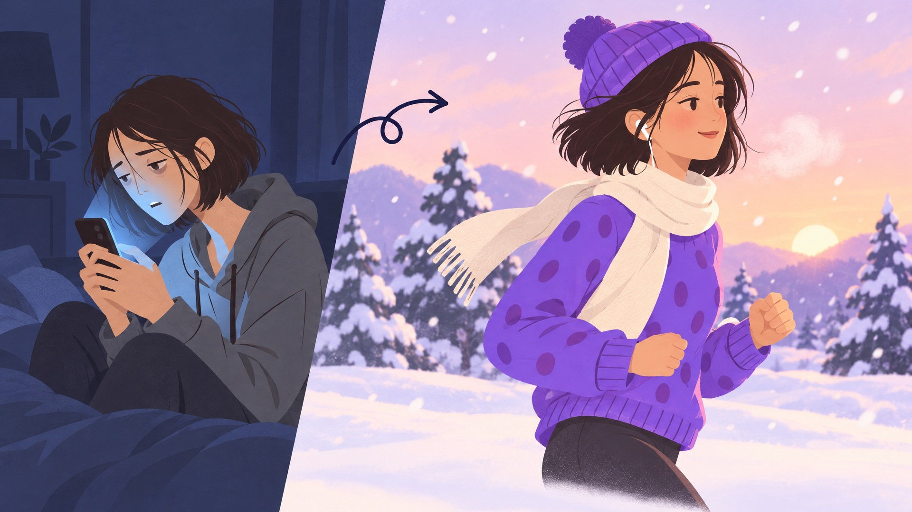
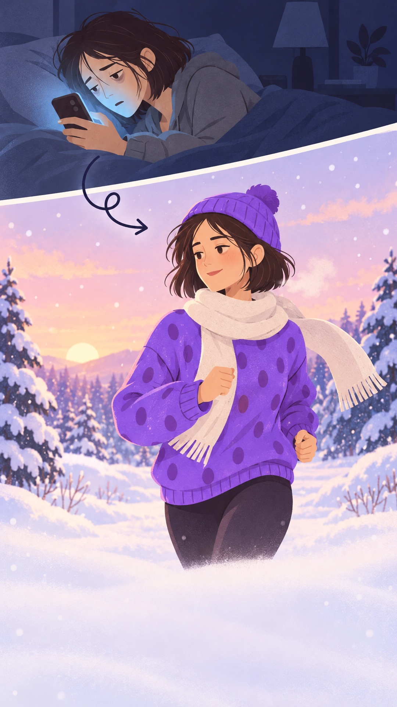

Winter Arc Press Kit
Choose a habit before your phone does.
- What: a free 30-day habit challenge inside the Dear Brain iPhone app.
- When: November 1–30, 2026.
- How it works: pick your habits, do each one on 20 days in November, then share your Winter Arc card with a friend. During each habit, Dear Brain blocks distracting apps with Apple's Screen Time.
- Price: free to join, no purchase needed.
- Link: dearbrainapp.com/winter-arc
Artwork




About Dear Brain
Dear Brain is an iPhone app that replaces doomscrolling with habits. When a habit begins, it locks the apps that pull you in until you finish; a photo can prove the habit is done, checked once and never saved. Made by an independent developer.